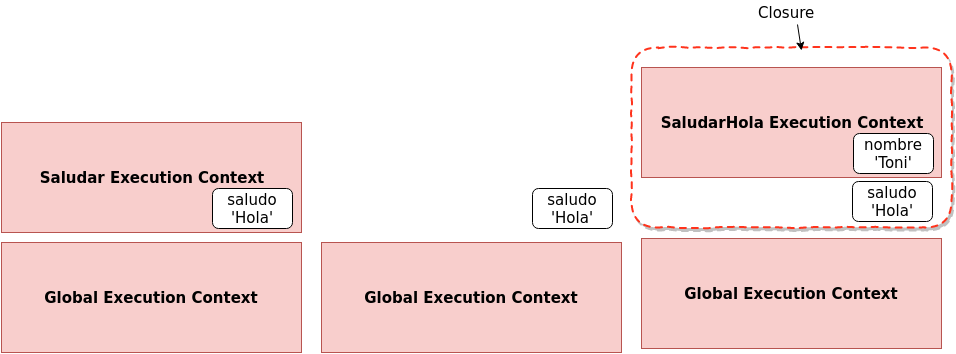
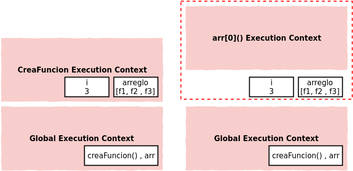
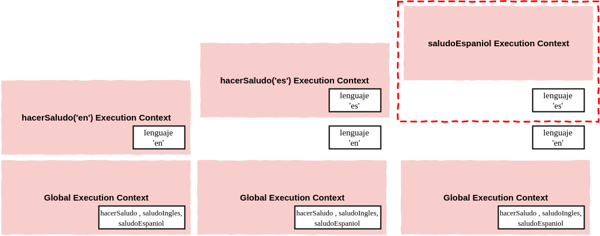

JavaScript
Avanzado II
Closures
Otro tema importante en JavaScript es closures. Veamos a que se refieren con un ejemplo:
function saludar( saludo ){
return function( nombre ){
console.log(saludo + ' ' + nombre);
}
}
var saludarHola = saludar('Hola'); // Esto devuelve una función
saludarHola('Toni'); // 'Hola Toni'Veamos paso a paso lo que va a ocurrir cuando ejecutemos este código. Primero se creará el contexto de ejecución global, en esta etapa el interprete guardará espacio para la declaración de la función saludar. Luego, cuando se encuentra con la invocación a la función saludar, va a crear un nuevo contexto, y como vemos dentro de ese contexto la variable saludo va a tomar el valor que le pasamos por parámetro:'Hola'. El stack quedaría cómo está representado en la primera parte de la figura de abajo.

Luego de terminar de ejecutar y retornar una funcion (la que estamos guardando en saludarHola), ese contexto es destruido. Pero que pasa con la variable saludo?. Bueno, el interprete saca el contexto del stack, pero deja en algún lugar de memoria las variables que se usaron adentro (hay un proceso dentro de JavaScript que se llama garbage collection que eventualmente las va limpiando si no las usamos. ). Por lo tanto, esa variable todavía va a estar en memoria (Segunda parte de la imagen).
Por último ejecutamos la función saludarHola y pasamos como parámetro el string 'Hola'. Por lo tanto se crea un nuevo contexto de ejecucción, con la variable mencionada. Ahora, cómo adentro de la función saludarHola hacemos referencia a la variable saludo, el interprete intenta buscarla en su scope; Cómo saludo no está definida en ese contexto, el interprete sale a buscarla siguiente la scope chain y a pesar que el contexto ya no existe, la referencia al ambiente exterior y a sus variables todavía existe, a este fenómeno es que le llamamos CLOSURE. En el ejemplo, el closure está definido por el rectángulo punteado de rojo. Las closures no son algo que se escriban, o qué se le indique al interprete, simplemente son una feature del lenguaje, simplemente ocurren. Nosotros no tenemos que pensar ni ocuparnos de mantener variables en memoria según el contexto de ejecucción en el que estemos, el interprete se encargará de esto siempre. Los Closures nos van a permitir armar algunos patrones interesantes.
Ejemplo Closures
var creaFuncion = function(){
var arreglo = [];
for ( var i=0; i < 3; i++){
arreglo.push(
function(){
console.log(i);
}
)
}
return arreglo;
}
var arr = creaFuncion();
arr[0]() // 3 sale un 3, qué esperaban ustedes??
arr[1]() // 3
arr[2]() // 3¿Porqué el console log da todos 3?
Para entenderlo veamos cómo se van creando los contextos de ejecución y donde van quedando los objetos que creamos.
En un primer momento se creará el contexto global, donde van estar definida la función creaFuncion y también el arreglo arr.
En un segundo momento, se va a crear el contexto de la función creaFuncion que fue ejecutada. Dentro de ella, se reserva espacio para un arreglo llamado arreglo, y para la variable i.

Cuando el interprete llega a la línea del return, se destruye el contexto de ejecucción de creaFuncion y volvemos al contexto global. La siguiente ejecución que se produce es la de arr[0](). Cabe notar que la variable arr apunta o hace referencia al arreglo arreglo que vive en el contexto de creaFuncion, esto sucede porque los arreglos son objetos y estos se pasan por referencia y no por valor. Como vemos, se crea el contexto de ejecución para esa función (arr[0]). Dentro de esta hay una referencia a la variable i , que también vivia en el contexto de creaFuncion, ya destruido. Como el interprete no encuentra otra variable i dentro del nuevo contexto, sale a buscarla en sus referencias y ,como sabemos, la va a encontrar en el closure que envuelve estas variables. Luego, ejecuta las siguientes funciones arr[1]() y arr[2](), y en ambos casos sucede lo mismo. Justamente por eso, en cada console log, se imprimi el valor que tiene la variable i, que es 3 (el valor que quedó cuando se terminó el lazo dentro de creaFuncion).
Si quisieramos que cada función guardase el valor de i, deberíamos crear un execution content donde se cree una variable nueva en cada iteración. Para eso vamos a usar una IIFE a la cuál le vamos a pasar como parámetro i. Como estamos ejecutando la función, se va a a crear un contexto nuevo por cada ejecución, y por ende van a exisiter tres variables j (cada una en un contexto distinto) que contendrán los valores recibidos por parámetro (1, 2 y 3).
var creaFuncion = function(){
var arreglo = [];
for ( var i=0; i < 3; i++){
arreglo.push(
(function(j){
return function() {console.log(j);}
}(i))
)
}
return arreglo;
}
var arr = creaFuncion();
arr[0]() // 1
arr[1]() // 2
arr[2]() // 3Function Factory
Vamos a ver un patrón para crear funciones, muy usado en el desarrollo de frameworks, y que existe gracias a los closures.
Veamos el siguiente código, primero definimos una función que va retornar otra función (esta sería nuestra fábrica de funciones), esta recibe como parámetro el lenguaje del saludo, y retorna una función que salude (console loguee) en el idioma recibido.
function hacerSaludo( lenguaje ){
return function(){
if ( lenguaje === 'en'){
console.log('Hi!');
}
if ( lenguaje === 'es'){
console.log('Hola!');
}
}
}
var saludoIngles = hacerSaludo('en');
var saludoEspaniol = hacerSaludo('es');Si pensamos que ocurre cuando ejecutamos esas líneas, vamos a ver que se crearon dos closures. Uno para cada ejecución de la función hacerSaludo, en un closure la variable lenguaje contiene es y en el otro contiene en. Entonces, cuando invoquemos las funciones saludoIngles o saludoEspaniol, el intérprete va a salir a buscar la referencia a esa variable fuera del contexto de ejecución y la va a encontrar en el closure correspondiente.
O sea, que estamos usando el concepto de closure para setear un parámetro para que viva sólo dentro de una función, además nadie puede ingresar al valor de lenguaje, esto agrega un poco de seguridad a nuestro código.

Cada vez que invocamos una función se genera un execution context para esa ejecución. Si invocamos muchas veces la misma función ocurre lo mismo.
Closures and Callbacks
Ahora que sabemos lo que son los closures, si pensamos en todo lo que hicimos algunas vez con JavaScript, es muy probable que nos demos cuenta que ya lo veniamos usando (tal vez sin saberlo).
Por ejemplo:
function saludarMasTarde(){
var saludo = 'Hola';
setTimeout( function(){
console.log(saludo);
},3000)
};
saludarMasTarde();En el ejemplo de arriba, cuando inocamos a saludarMasTarde estamos creando un execution context, en el que invocamos a la función setTimeout y donde definimos la variable saludo. Ese execution context es destruido, pero setTimeout contiene una referencia a saludo. Closure, Maybe?
Lo que realmente ocurre es que cuando pasan los tres segundos (esto lo hace algún componente externo al interprete), se lanza un evento diciendo que hay que ejecutar el callback, que es justamente una function expression. Entonces se crea un execution context para esa función, y dentro de ella se usa saludo, pero no está en ese contexto, entonces el interprete sale a buscarla afuera, y la encuentra en el closure!
O sea que se hicieron algo parecido a esto (tal vez usando eventos), entonces ya usaron functions expressions y muy probablemente closures tambien!
Call, Apply and Bind
Cuando vimos el keyword this, dijimos que el interprete era el que manejaba el valor de este. Bueno, esto no es del todo cierto, hay una serie de variables que nos van a permitir poder setear nosotros el keyword this.
Como en JavaScript las funciones son un tipo objeto especial (vimos que tenian algunas propiedades especiales como code y name), estas también contienen métodos propios. Todas las funciones tienen acceso a los métodos:
- call()
- bind()
- apply()
Justamente invocando estos métodos vamos a poder tener control sobre el keyword this. Veamos algunos ejemplos:
var persona = {
nombre: 'Franco',
apellido: 'Chequer',
getNombre: function(){
var nombreCompleto = this.nombre + ' ' + this.apellido;
return nombreCompleto;
}
}
var logNombre = function(){
console.log(this.getNombre());
}En este ejemplo, vamos a usar el keyword this para invocar el método del objeto persona. Como verán, el código de arriba produce un error, ya que cuando ejecutamos logNombre(), el this que está adentro hace referencia al objeto global, y ese objeto no tiene un método getNombre.
var logNombrePersona = logNombre.bind(persona);
logNombrePersona();La función bind() devuelve una copia de la función, la cúal tiene internamente asociado el keyword this al objeto que le pasemos por parámtro. Si la llamamos sobre logNombre y le pasamos persona como argumento, vamos a ver que al ejecutar la nueva función logNombrePersona() se va a loguear correctamente el nombre de persona.
Si usamos bind() entonces la nueva función queda siempre ligada al objeto que pasamos cómo argumento. O sea que si quisieramos usarla para otro objeto, tendríamos que crear una nueva copia de la función y bindiarle un nuevo objeto.
Si ese es el caso, podríamos usar call(), veamos cómo funciona:
logNombre.call(persona);En este caso, estamos invocando la función original logNombre, pero con call le estamos indicando a qué objeto tiene que hacer referencia this dentro de esa función.
El primer argumento de call es el objeto a usar cómo this. Despues de este puedo pasar otros argumentos, que serán pasados a la función que estamos invocando. Por ejemplo, si nuestra función recibiera argumentos, usariamos call de la siguiente manera:
var logNombre = function(arg1, arg2){
console.log(arg1 +' '+ this.getNombre() +' '+ arg2);
}
logNombre.call(persona, 'Hola', ', Cómo estas?'); //Hola Franco Chequer , Cómo estas?De hecho, la función apply es casi igual a call, excepto que recibe los argumentos de distinta manera. apply necesita dos arguemntos, el primero es el objeto a bindear con this (igual que call) y el segundo parámetro es un arreglo, en este arreglo pasamos los argumentos que va a usar la función que invocamos. Por ejemplo, para obtener el mismo comportamiento que arriba, pero con apply:
var logNombre = function(arg1, arg2){
console.log(arg1 +' '+ this.getNombre() +' '+ arg2);
}
logNombre.apply(persona, ['Hola', ', Cómo estas?']); //Hola Franco Chequer , Cómo estas?Un arreglo puede ser más fácil de pasar cuando no sabemos a priori cuantos argumentos le voy a pasar.
Vamos a usar
calloapplysegún nos convenga para resolver el problema que necesitemos.
Vamos a usar estos métodos muchas veces cuando programemos, tal vez ahora no se imaginen un caso puntual, pero los habrá! se los aseguro!
Veamos un simple ejemplo donde podríamos usarlos, esto se conoce cómo function borrowing (tomando prestadas funciones). Vamos a crear una segunda persona, pero que no tenga el método getNombre como la primera:
var persona2 = {
nombre: 'Manu',
apellido: 'Barna'
};Ahora, vamos a pedirle prestado el método getNombre a la primera persona y la vamos a usar con la nueva.
persona.getNombre.call(persona2); //'Manu Barna'Con esto pudimos invocar un método de un objeto, pero usándolo con otro!
Veamos otro mini patron: function currying, este involucra bind.
Como bind crea una nueva función, si le pasamos parámetros, estos quedan fijos en la nueva función. En el ejemplo no vamos a bindiar this con nada, pero si unos parámetros.
Digamos que tenemos una función que multiplica dos números recibidos por parámetro. Y nos gustaría construir una función que multiplique un número recibido por argumento por dos. Para esto podríamos usar bind y le pasamos cómo primer parámetro this (en este caso this hace referencia al contexto global), y como segundo parámetro un 2. Guardamos el resultado en una nueva variable:
function multiplica(a, b){
return a * b;
}
var multiplicaPorDos = multiplica.bind(this, 2);De esta forma, tenemos una nueva función donde el parámetro a es siempre 2, gracias a bind. Nótese, que dentro de multiplicaPorDos, this sigue haciendo referencia al objeto global, porque cuando lo bindeamos le pasamos ese parámetro.
Function Currying se refiere a crear una copia de una función pero con algunos argumentos preseteados. En JavaScript lo hacemos con
bind.
Homework
Completa la tarea descrita en el archivo README